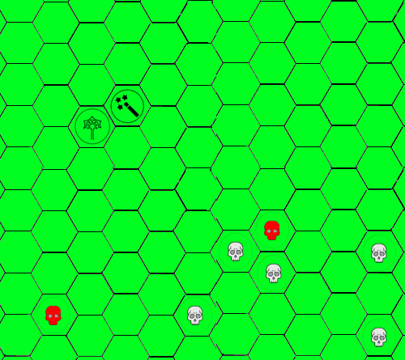
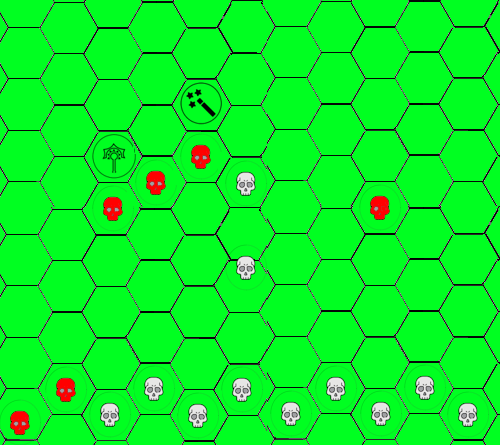
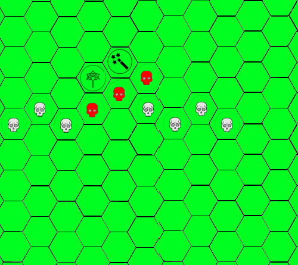

"You have returned victorious?" asks Hurg, the chieftain of the Scarface Goblins. The two Seekers have been presented before the chieftain and the shaman, who stands by the chieftain's wooden throne. Aury sublimates his surprise at the chieftain's command of the common tongue.
It's perhaps ninety minutes after our heroes battled the combined force of lizardmen and froglings. Our heroes are tired and dirty, but also young and satisfied. "A great victory, yes, chieftain. And we bring you this bounty," says Matthias, presenting the plast bag of frogling hearts. A goblin warrior promptly takes the bag and inspects it for safety before handing it over to Hurg.
The chieftain peers into the bag, then makes a pleased, guttural noise low in his throat and reaches in, pulling out a fist-sized heart. "Ag-kirzhak, Krizhurg!" he says — My Enemy's Strength, Now My Own — holding the heart aloft — at which nearby watching goblins cheer and beat clubs and other weapons together, creating a celebratory din.
Hurg takes a bite out of the heart, then passes it to his shaman, Gursk, who follows suit before passing it on to Cere-Lukh — Blood Letter — the tribe's champion.
Aury silently offers thanks that the shared heart snack doesn't last long enough to make its way around the circle for him to sample. That's all yours, Hurg and company. Inherit the strength of your foes, and all that nonsense, thinks the cleric.
The cleric's attention shifts as a renewed swelling of cheers sweeps through the camp. Aury turns to see two goblins laboring with a horizontal pole held between them. Suspended from it is a field-dressed wild boar. The two goblins, with the assistance of a third, get the kill situated above the communal fire for cooking.

By midafternoon, Aury's stodginess has softened, in small part due to the ongoing friendliness of these goblins, but in (significantly) larger part due to consuming the potent brew that the goblins call cuumess. Our beloved cleric of the Forgotten One has consumed several pints — enough that his ten-thousand times removed catholic ancestors would have felt a firm kinship with him.
Despite the cold weather, the cleric finds himself enjoying the goblins' hospitality. He doesn't allow himself to consume too much alcohol. Though he trusts Matthias' judgment with regard to this particular goblin tribe, he nevertheless wants to remain battle ready.  His caution proves wise as — perhaps thirty to forty yards away, the sounds of merriment clash dissonantly with battle cries and the banging of weapons on wooden shields.
His caution proves wise as — perhaps thirty to forty yards away, the sounds of merriment clash dissonantly with battle cries and the banging of weapons on wooden shields.
Aury runs, mace coming into his right hand almost as if of its own volition. There, near the southwestern edge of the settlement: he sees that Matthias is already present, inspecting the scene. Several goblins are in pitched battle with undead skeletons that appear to have entered the camp from the bog.
The cleric draws up alongside his mage friend and receives unsolicited commentary from the magic-user: "Undead from the bog. They've been more frequent in this area in recent months. Tauste thinks it's probably caused by increased plundering of the Barrowmaze tombs."
Aury grunts in acknowledgment. He's tipsy enough to feel a throbbing excitement, but still mindful enough to be vaguely ashamed. "Do we help out, or would our allies take offense?"
"Let's assist," suggests the mage. "But don't aid their champion, Cere-Lukh. He can get a little territorial about his kills." The mage points with his ebony quarterstaff. Over there," he indicates a spot further west along the camp's perimeter, "another group of undead. Let's focus on containing it." And so our heroes choose to leave the first group of skeletons to the goblins and move as a team toward another group of undead emerging into the camp from the bog.
The two draw up some twenty to twenty-five feet shy of the nearest ambling skeletons. Aury feels his blood tingling; he is experiencing some powerful yet unspecific excitement at the prospect of destroying these ... abominations. Yes, a sober corner of his mind supplies. I'm feeling righteous wrath.
The cleric makes to charge into battle, but Mattie says loudly, "Bide. No need to risk ourselves more than necessary. Unless they put on more speed than that, we can easily outmaneuver them."
Aury gives his customary grunt of consent. The cleric reaches under his jerkin where the collar peeks out above his studded leather hauberk and produces a holy symbol. It is a cross-shaped circular emblem in some sort of bright white metallic substance, a tiny hole drilled in one arm of the cross so that the emblem can be threaded onto a necklace. He speaks aloud a musical, multi-syllabic word that sounds to Matthias like silver chiming bells and the rasp of a drawn sword, simultaneously.
No sooner has the cleric pronounced a holy word than the skeleton almost due south of him explodes in a loud shower of bone shards and white dust. Matthias is momentarily stunned, but recovers and sends a burst of magic toward a skeleton southeast of him. Though it isn't instantly destroyed as was Aury's skeleton, in a matter of seconds the eldritch acid coating delivered by the mage dissolves the undead's integrity sufficient to fell it.
Those few seconds in which our heroes destroyed two of the skeletons gave time for the remaining skeletons to disentangle their foot bones from the tangled weeds, roots and muck collected from walking through knee-deep bog water — now they come on with greater speed, and it becomes apparent the Seekers no longer have the advantage of speed.
As the remaining five skeletons close with the heroes, a new round begins, and in heroic fashion our two Seekers act first. Aury's initial mace swipe is blocked by a rusty, muddy sword wielded by the skeleton southeast of him, which is menacing Mattie. And so the cleric, ever protective of his less stout companion and friend, focuses his
Matthias staves in the skull of a skeleton, the orichalcum knob at the end of his quarterstaff many times harder than the weather- and water-worn pate of this undead shambler. And then the mage reaches out with an invisible pseudopod of magical force and shatters the skeleton several paces to the southeast.
As a new round of combat begins, the throaty warcry of Cere-Lukh reverberates across the encampment and another wave of skeletons emerge from the bog. As in the previous round, Aury's mace fails to connect with his target, initially. This time it is blocked by a sodden, rotten wooden shield that falls completely apart after softening the impact of the cleric's weapon, and Aury is forced to
Meanwhile, Mattie has reached out with his magic to demolish another skeleton and has been hit yet able to pivot with the attack so that his injury is negligible. As round 3 begins, I've hidden the defeated skeletons on the map in the service of clarity. Our heroes have held position, letting the skeletons come to them. At the top of round 3, three skeletons are within melee range of the cleric, while one is adjacent to the mage.
Aury gets hit twice, suffering 2 HP from one skeleton and 1 from another, dropping the cleric from 8/13 to 5/13 HP. In response, Aury grasps his holy symbol and breathes a prayer, regaining 7 HP, which puts him back at 13/13. Matthias, his ally, regains 1 HP and is now at 9/10.
"Wait for it..." Mattie chants to himself, and sure enough a skeleton moves to within range and the mage's magic looses the bonds that hold bones together.
Round 4 begins, and though Aury's mace misses, Mattie's quarterstaff does not. Each of them make their Fray Dice attacks, and in total three more skellies go down. A skeleton steps mechanically past its fallen fellow and swipes at Matthias — the mage sustains 2 HP of damage, dropping him to 7/10 HP.
Three skeletons tag team Auriochos, but in a series of shield blocks, minute position changes, and a mace-delivered parry, the cleric remains untouched. His old Seeker instructors would be proud. Another fifteen seconds go by heart-poundingly, during which Aury drops to 12/13 HP and Mattie to 6/10. And then ... no more skeletons, at least not right here in this portion of the camp. Our heroes have defeated a dozen of these negative energy monstrosities, garnering a total of 780 XP, 390 XP apiece.